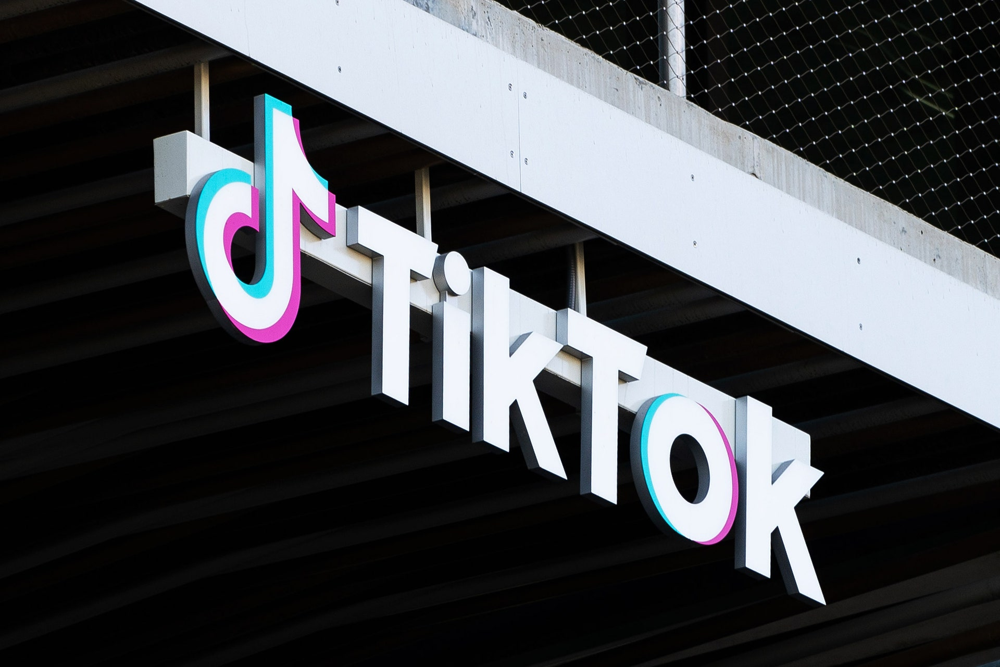
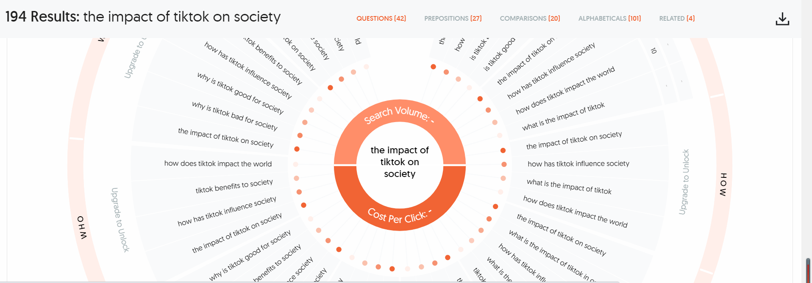
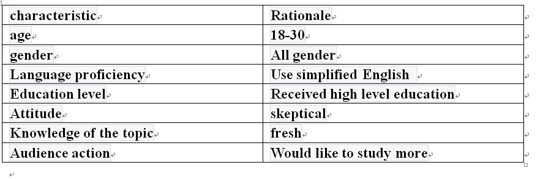
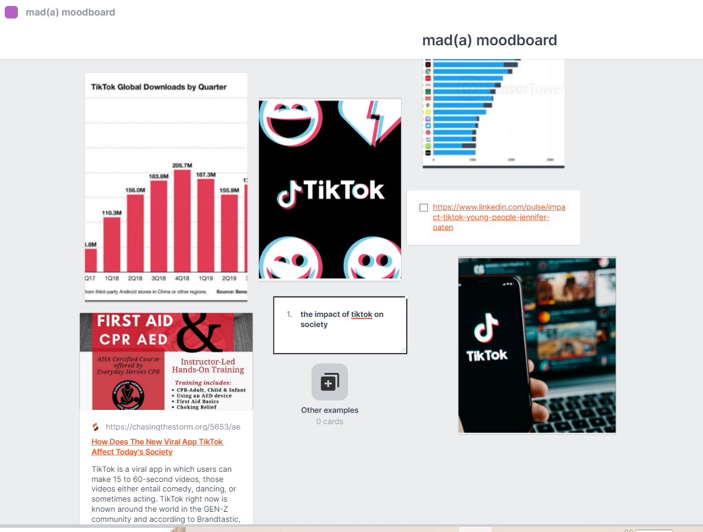

The Influence of TikTok on soceity
This is project of Mad(a), my project is about the impact of tiktok on society. It mainly discuss the effect of tiktok on different aspect of our daily life
The Influence of TikTok on Society" is a compelling topic that examines the profound impact of the popular short-form video platform on modern culture, behavior, and digital media landscape. TikTok, known for its user-generated content and viral challenges, has become a global phenomenon, redefining the way individuals interact with digital media and each other. TikTok's influence on society can be seen through various lenses, including its role in shaping entertainment, fostering creativity, and influencing trends. It has provided a platform for people from diverse backgrounds to express themselves, tell stories, and engage in social and cultural discourse in a unique and dynamic way. This influence extends to areas such as music promotion, influencer marketing, and the rapid spread of trends. TikTok has also raised important questions about data privacy, copyright issues, and the ethical use of digital media.
This is an image of tiktok app.
Week1 Task
task1
I choose to make a website about tiktok. It is closely relate to our major. Also, tiktok is a very popularity app in our daily life, it makes lots of effect on our daily life.I believe people can understand more knowledge about tiktok from this website, and it is really helpful.There are many interesting topics about tiktok(see the picture on the right hand side)

task2 How tiktok influence our society
The figure on the below shows how many different results about the impact of tiktok on society from Google. The power of TikTok can’t be underestimated— it can make or break someone else’s career. It can influence people’s perceptions on others. It can also lead to the spread of various trends… Whether it be food blogs, dance trends or transition videos, TikTok offers some form of entertainment for people universally. In fact, over it has over 1 billion active users monthly— could we even go as far to say TikTok is becoming the most influential app ever created?
Week2 Task audience
things to consider
Because tiktok is suitable for all ages and styles, so I assume that I have a broad audience. Well, not everyone cares about how tiktok influence society, so I want to focus on the narrow audience.
Task 2Building an audience personas

lab task
I choose the website "pudding" to identify, it is the most interesting website I ever see. There are a very interesting types of interaction, and it is very useful and attractive for the audience. Well, it is not very interesting in the first impression because the main page is boring, but other aspect is designed perfect. It use a very interesting design to provide the knowledge which audience needs. And it has very depth knowledge.

Task 3 moodboard
I have so many idea in my head and don't know how and should I show them in the html website,my moodboard should like the picture below
Week3 Task
Narrative Plan
- Key Narrative Points:
- Exploring TikTok's cultural influence and trends.
- Highlighting its role in shaping popular culture.
- Discussing impacts on entertainment, education, marketing, and social movements.
- Examining both positive and negative effects.
- Objectives:
The objective is to educate the audience about the multifaceted impact of TikTok on society. The website aims to help visitors gain a comprehensive understanding of how TikTok has shaped modern culture.
- Understanding Your Audience:
The target audience includes digital natives, marketers, educators, policymakers, and individuals interested in the digital landscape. The narrative voice should be informative, combining formal and informal elements to cater to a broad audience.
- Conceptual Structure:
A thematic structure will be employed, with sections dedicated to culture, entertainment, education, marketing, and social impact. Each section will explore the topic from various angles, providing a holistic view of TikTok's influence.
- Multimedia Integration:
Multimedia elements, such as videos showcasing TikTok trends, infographics explaining statistics, and testimonials from users, can enhance the narrative.
- Reflect on Learning Objectives:
The narrative should impart knowledge about TikTok's impact, ranging from trends to its role in socio-political movements.
- Create a Framework:
Outline the main sections of the website, such as "Cultural Influence," "Entertainment," "Education," "Marketing," and "Social Movements." Subtopics within each section will delve deeper into specific aspects.
- Be Creative:
Use storytelling and real-life examples to make the content engaging and relatable to the audience.
- Citation and References:
Incorporate academic and journalistic sources to support claims and provide a well-rounded perspective on the topic.